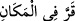
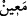

“Meryem oğlunu” yâni Îsâ’yı “ve annesini de” hiçbir beşerle temas etmeden ondan
doğmasını kudretimizin büyüklüğünü gösteren “bir alâmet kıldık.” Şu halde
âyet/alâmet, ikisine de izâfe edilen bir tek husustur. Ya da şöyle demektir: ‘Beşikte
konuşmak ve ondan birçok mûcizeler zâhir olmak sûretiyle Meryem oğlunu bir
âyet/alâmet kıldık. Kimse kendisine dokunmadan onu dünyaya getirmek sûretiyle
annesini de bir âyet/alâmet kıldık.’ İkincisi kendisine delâlet ettiği için bunlardan
birincisi hazfedilmiştir.
el-Uyûn’da şöyle der: “Buradaki ‘âyet/alâmet’ Mûsâ’dan sonra İsrâiloğulları’na bir
ibret demektir. Çünkü Îsâ (a.s.) beşikte iken konuşmuş ve ölüleri diriltmiştir. Hz.
Meryem onu hiçbir kimse kendisine dokunmadığı halde doğurmuştur. Her ikisi de kesin
iki âyettir. Şu halde âyetteki ifâde onlardan birinin zikri ile yetinilmesi kabilinden olur.”
Îsâ (a.s.)’ın öne alınması, zikredilen hususlarda âyet olması bakımından asıl olduğu
içindir. Nitekim “Onu (Meryem’i) ve oğlunu cümle âlem için bir ibret kıldık.” (el-
Enbiyâ, 21/91) âyetinde annesinin öne alınması, kendisine nisbet edilen iffetle ırzını
korumuş olma ve kendisine üflenmesi hususunda asıl olması sebebiyledir.
Rivayet edilir ki Rasûlullah (s.a.) Mekke’de sabah namazı kıldırdı ve Mü’minûn
sûresini okudu. Îsâ (a.s.) ile annesinin zikredildiği âyetlere gelince gözleri yaşla doldu,
boğazı düğümlendi, okuyamaz hale geldi ve rükûa gitti.
“Onları, yerleşmeye elverişli,” rahat ve huzur elde edilebilecek, ferah ve rahat bir
tepeye yerleştirdik. Bunun meyveleri ve ürünleri bol anlamında olduğu da söylenmiştir.
Çünkü orada oturanlar, bu meyve ve ürünler için oraya yerleşirler. Görünen ve akan
“suyu bulunan bir tepeye yerleştirdik.” Yahudi kavminden kaçtıklarında annesini ve
oğlunu (Hz. Meryem ve Îsâ’yı) yerleştirdik ve onları Beytü’l-makdis’te bir tepeye geri
getirdik. Yâni onları yüksek bir yerde konaklattık. Orasını onlara barınak ve menzil
yaptık. Burası İlya, yâni Beytü’l-makdis topraklarıdır. Burası yüksek bir yerdir.
İmam Süheylî der ki: “Hz. Meryem, İsa çocukken onunla Dimaşk’ın Nâsıra adlı bir
köyüne sığındı. Hristiyanlar’a “Nasârâ” denilmesi buradandır.”
Kâşifî der ki: “Rivayet edildiğine göre Meryem, oğlu ve amcasının oğlu Yusuf b.
Matan on iki yıl orada yaşadılar. Îsâ’nın geçimi, annesinin eğirip sattığı ipliktendi.”
Fakir (Bursevî) der ki: Bunda işâret vardır ki pamuk, keten ve benzerlerini eğirmek,
kadınların hayırlı olanlarının işlerinden olduğu için Bursa’nın ve ipek böceği hâsıl olan
yerlerin ahâlisinin düşkün oldukları ipek ve benzerlerini eğirmekten daha sevimlidir.
Halbuki ipek dünya ehlinin ziynetlerindendir. Dünya ehli çoğunlukla onunla meşhur
olmuşlardır ve onunla övünürler.
Râğıb der ki: “: “bir yere yerleşti” demektir. Aslı soğuk anlamındaki “dandır. Çünkü soğuk sükûnu, sıcak ise hareketi gerektirir.
Meydana çıktığı ve gözle göründüğü için akan suya “ denir. Bu tepenin suyunun
böyle vasfedilmesi, içme, sulanan hayvanları ve bitkileri külfet çekmeden sulama, güzel
ve hoş manzarasında gezip dolaşma gibi türlü faydaları kendisinde topladığını
bildirmek içindir. Eğer orada akarsu olmasaydı, tam sevinç elden gidecek ve mekanın